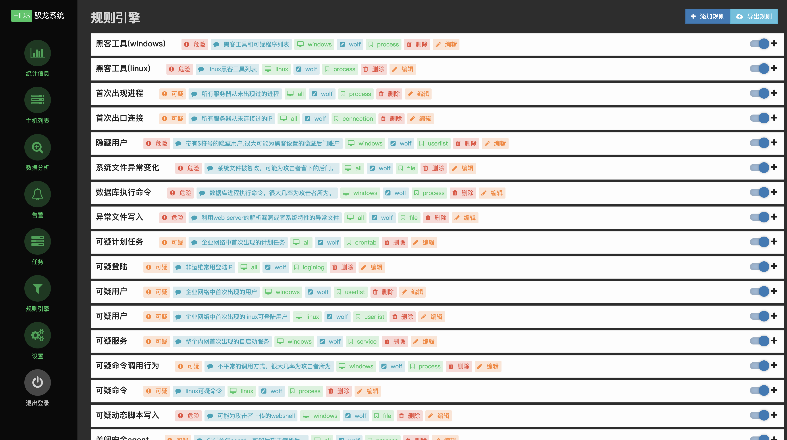

一、起源
yulong-hids可以说是国内第一个比较成熟的开源hids项目，虽说项目已经发布很久，但直到几个月前才想着去学习一下其技术原理，主要是之前这块的研究需求不是很高，而且环境搭建过程较为复杂，没有一键化的脚本，自己手搭受挫了几次随即没了兴致（捂脸），最近心血来潮又来玩了一遍终于搭成功了（捂脸），果然还是成长了吗（//雾）
二、功能
yulong-hids拥有的主要功能模块如下：
1、统计信息

此模块为产品的展示面板模块，首先包括主机数（agent）、告警数、任务数、服务器数（server）、数据总数（信息/行为）这些重要项的数量展示，其次是告警的图表展示，包括告警日期分布折线图、告警类型分布统计饼状图（告警类型为规则名）、告警数量时间分布柱状图及告警信息展示top8（按次序排列）
2、主机列表

此模块为agent管理模块，方便用户监控安装agent的主机行为（进程、文件、网络等）并支持agent下载安装
3、数据分析

此模块为溯源模块，可以从es中快速查询关键词显示，支持简单的搜索语法
4、告警
显示全量告警，支持自动溯源和处置响应（进程、文件、网络），允许手动变更事件状态（未处理、已处理、忽略）并支持加白/加黑处理
5、任务

允许用户在server端自定义一些任务下发给agent，任务指令如下：
1 | kill: 结束进程(传入进程名) |
6、规则引擎

此模块自己实现了一套简单的规则引擎对事件进行过滤和匹配规则，支持server控制台编写、导出、修改（编辑）规则，支持已有规则的细粒度控制（开/关）
7、设置
此模块为server端的一些配置，配置后会下发给agent，配置项太多具体不再赘述
三、架构

以上为yulong的整体架构图，具体说明如下：
Web
Agent
agent收集主机开机启动项、计划任务、监听端口、服务、登陆日志、用户列表等静态文件信息的同时对主机行为进行监控，主要包括进程、文件、网络三块，技术选型分别如下：
1 | 进程监控：lkm hook |
将监控、收集到的信息格式进行初筛后根据信息类型组成特定类型的事件并通过rpc协议传输给server，由server进行进一步的数据解析处理
Daemon
daemon为agent的守护进程，负责agent热更新、进程守护、静默部署、服务指令接收等功能，其中daemon会专门开一个65512端口用于接收server端下发的任务
Server
server主要用于agent数据接收、数据分析、安全检测、任务下发及结果保存，具体说明如下：
1 | 数据接收：server在33433端口部署rpc服务来接收所有agent上传的事件 |
Database
四、实现
源码结构
1 | ├─agent // Agent工程 |
Web
Agent
Daemon
Server
Database
五、问题
六、总结
ing